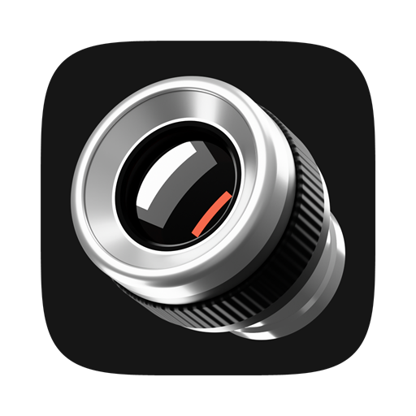

your ask, 2026-11-24: a gear for the app's settings, at the top right on a mac and beside minimize on windows. a sidebar of pages, general and about first, the open-source notices the law asks for, and "a tridant system" on the about page. and, once the repo is public, a check for new releases at launch that never asks by itself: an update button beside the gear, a modal with the new version, and update or cancel. this section drew all of it before any of it was coded. you approved it on 2026-11-24, with two changes made here: the app's description, and mono kept for titles and numbers only.
everything below follows the plan's rules: no accent on the strip, orange only on switches, sliders and the focused field, amber only for a fault in a file, a chip for anything that changes the picture, and your keys where they are. figures go on from section 05's fig. 31, so this section starts at fig. 32. the mocks are drawn at the design's own pixels; on a narrow screen each frame scrolls sideways on its own.
| what | as drawn | fig. |
|---|---|---|
| where settings live | a panel drawn inside the player's window, over whatever is up, as the table of keys is. not a second os window. about 760 × 500 at the design's scale: pages at the left, the page at the right. esc, its close mark or a press outside it closes it; it scrolls when the window is smaller. | 33 |
| how it opens | the gear, and ctrl + , (cmd + , on a mac). a new key; none of yours moves. | 32 |
| the strip's right end | left to right: update (only when there is one), ?, the gear, the tridant mark; then on windows minimize, maximize and close. on macos, where the system's buttons hold the left end, the mark is the last thing at the right. | 32 |
| an update is out | a quiet update text button, first in that row: a 1 px outline in the line color, the foreground's ink, no accent. nothing else says so: no dialog, no toast, no badge. | 32 |
| the tridant mark | the brand's small star, in the strip's dim ink, brighter under the pointer. resting on it shows a card that stays while the pointer is on the mark or the card: the star, larger and moving as on tridant.io, then "eyepiece 0.1.0", "a tridant system" and tridant.io as a link. the commit stays on about. a press on the mark opens about. | 32 |
| help | the ? button and the ? key open a help panel, built as settings is: "keys", the table of keys that ? brings up over the clip today, and "what eyepiece does": what it is, its basic features, the links and the license. | 39, 40 |
| settings pages, in order | general, about, playback, display, browser, screenshots, open-source notices. keys moved to help. the version stands at the foot of the sidebar and on about. | 33–38 |
| type | mono only for titles and numbers (headings, values, file names and paths, key caps); every sentence, label and button in archivo. app-wide, the owner's word, 2026-11-24. | 32–40 |
| what eyepiece is, in one line | "a video review player for video professionals: extremely fast, lightweight, and only what you need." the owner's word, 2026-11-24. | 34, 40 |
| saving | a change takes effect at once and goes into settings.txt. no save button. each page has a quiet "reset this page" at its foot. | 33 |
| the update check | at launch, off the drawing thread, after the first frame. one unauthenticated GET of the repo's latest release, at most once a launch and once a day. no account, no telemetry; nothing sent but the request, as eyepiece/<version>. offline or refused: silent, tried at the next launch. a switch turns it off; about has "check now". | 33, 34 |
| the modal | the version pair, the release date, at most three short lines of what changed and a link to the full notes; then update or cancel. update downloads, checks, puts the new build in place and restarts on the same tabs. any failure leaves the installed version as it was and says why. | 35 |
| what it is checked against | windows: the sha-256 the release lists, and tridant's code signature on the program. macos: the same sha-256, and the app's signature and notarization. | 35 |
| no new packages | the request and the download use each system's own http stack; the archive is unpacked by each system's own tool. | — |
| the notices | the same text as the THIRD-PARTY-NOTICES.txt that ships beside the program, searchable, with "reveal the file". | 36 |
| part | size, in the design's px | type | ink |
|---|---|---|---|
| update | 22 high, centered on the strip, 9 in at each side, 4 left of ?. | archivo 500, 12 | text #ededed, outline 1 px rgba(255,255,255,.13), no fill. hover and open: white at 10%. |
| ? | 32 × 32, the same box as +. a 16 × 16 question mark, stroke 1.4, square ends, its dot drawn as the info icon's. | — | #ededed. pressed, or while help is open: white at 10% behind it. |
| gear | 32 × 32. the icon 16 × 16, stroke 1.4, square ends, eight teeth and a hub: drawn new in the hand of the design's icons. | — | #ededed. pressed, or while settings is open: white at 10%. |
| tridant mark | 32 × 32; the star 14 × 14 in its middle, fill and stroke together as the kit asks. | — | #9c9c9c, the strip's dim ink; #ededed under the pointer. never the brand's colors here. |
| its card | under the strip, its right edge on the mark's, 6 below the strip. the star 40 × 40 at the left, 10 in; 12 to its right, three lines 8 apart: "eyepiece 0.1.0", "a tridant system", "tridant.io". no commit here: it stays on about, where a bug report needs it. | "eyepiece 0.1.0" in ibm plex mono 500, 11.5, as a title and a number; the rest archivo 500, 12, tabular figures | as a chip: black at 72%, 1 px line. the star and "tridant" in #ededed, "a" and "system" dim, as tridant.io sets the line; the link underlined dotted as the folder count on a tab is. |
| windows | minimize, maximize and close stay 40 each at the right edge. the three new boxes take 96, and update about 64 more, from the tabs' room. | — | — |
| macos | the mark flush right, its star 9 in from the edge, about as far in as the first system button is from the left. | — | the system's buttons keep the system's own colors; nothing of ours is colored. |
| hints | half a second after the pointer comes onto a button, a chip under the strip, right-aligned to it: "help ?", "settings ctrl ," ("cmd ," on a mac). update's says "eyepiece 0.3.0 is out". | archivo 500, 12; the key in mono 500, 11, as a key cap | as every chip |

| label | choices | default | in settings.txt | today |
|---|---|---|---|---|
| general | ||||
| play a file when it opens | on · off | on | autoplay | new today a file opens paused on frame 0 (play.rs). your ask. |
| open a file from the browser in | this tab · a new tab | this tab | browser_opens_in | behavior this tab, always; the metadata column's "new tab" does the other. |
| one window | on · off | on | one_window | behavior a second launch hands its file to the open window. the switch is new. |
| keep the controls up | on · off | off | pin_controls | exists the pin at the bar's left. |
| controls go after | 1 to 10 s, a proposal | 2.4 s | controls_after | behavior 2.4 s, fixed in src/ui/mod.rs. |
| remember the window's size | on · off | on | remember_size | behavior window_size is kept and used today; the switch is new. |
| check for updates when eyepiece starts | on · off | on | update_check, update_checked | new the second key holds the time of the last good check, for the once-a-day rule. |
| the settings file | reveal | — | — | new the button. the file is today's, editable by hand. |
| about | ||||
| check now | a button | — | update_checked | new asks once, whatever the switch says. |
| playback | ||||
| loop for a file | off · one | one | loop_file | exists the loop menu, R. |
| loop for a played folder | off · one · all | all | loop_folder | exists |
| loop analysis | 0.5 to 10 s each side of the seam | 3.0 s | loop_analysis_seconds | exists the loop menu. |
| count in | frames · timecode | frames | readout | exists T, or a click on the readout. |
| frame numbers start at | 0 · 1 | 0 | first_frame | file only no control until now. |
| volume | 0 to 100% | 80% | volume | exists the bar's slider, ↑ ↓. kept as last left. |
| mute | on · off | off | mute | exists M. |
| display | ||||
| behind the picture | black · dark gray · mid gray · custom | black | background | new black today (the renderer clears to black). #262626 and #808080 are proposals. |
| transparent parts | as stored · over checker | as stored | alpha_view | new as stored is today's. over checker is section 07's, not built, and leaves a chip. |
| chroma for 4:2:0 and 4:2:2 | blended · nearest | blended | chroma | file only the metadata panel says which. |
| grid, and its tile | on · off; width × height px | off; 240 × 240 | grid, tile | exists D, the view menu. |
| center lines and circle | on · off | off | center | exists C. |
| guide color | any #rrggbb | #3df0ff | guide_color | file only |
| browser | ||||
| start in | where it was last · a fixed folder | where it was last; downloads on the first run | browser_folder, browser_start | exists as where it was last. the fixed folder is new. |
| recent folders | clear | the last 5 | browser_recent | exists clearing them is new. |
| preview cache limit | 1 to 64 GB, a proposal | 2 GB | cache_limit | behavior a 2 GB budget fixed in src/preview. |
| clear the cache | a button | — | — | new one cache file at a time, under eviction's guard. |
| screenshots | ||||
| folder | any folder | Pictures\eyepiece | screenshot_folder | file only |
| a caption | on · off | off | screenshot_caption | exists the screenshot menu. |
| the guides, when showing | on · off | off | screenshot_guides | exists |
| the markup | on · off | on | screenshot_markup | exists |
exists: in settings.txt with a control today. file only: in settings.txt, no control yet. behavior: what the player does today with no key in the file. new key names are proposals. an older build keeps keys it does not know as written (settings.rs), so going back a version loses nothing.
| when | what goes out | carrying |
|---|---|---|
| today | nothing. the player makes no request to any server. reading a file on a share is the file system, bounded by adr 0004. | — |
| a start, with the switch on and the last good check over a day old | one GET to api.github.com | the request line and the two headers. like any connection, this machine's public address and the time. no account, id, file name or setting. |
| check now | the same GET | the same |
| update pressed | two downloads: the build for this system and the release's SHA256SUMS.txt, from github, which hands them to its file host | the same two headers |
| restart, clean up | nothing | — |
| a link on about, help or the mark's card | nothing from the player: the system's browser opens the page | — |
kept afterwards: the time of the last good check, in settings.txt. nothing about the machine, ever.
| step | windows | macos |
|---|---|---|
| what is installed | nine files in %LOCALAPPDATA%\Programs\eyepiece (scripts\package.ps1 -Install): eyepiece.exe, signed by Tridant, Inc.; avformat-63.dll, avcodec-63.dll, avutil-61.dll and swresample-7.dll, unsigned today; ffmpeg-LICENSE.txt, the two fonts-*.txt and THIRD-PARTY-NOTICES.txt. | eyepiece.app, one signed and notarized bundle in /Applications. not built yet: there is no bundle, no mac signing in the package step and no notarization today. |
| 1 · find | from the release's assets, by name: eyepiece-0.3.0-windows-x64.zip and SHA256SUMS.txt. | eyepiece-0.3.0-macos.zip and SHA256SUMS.txt. |
| 2 · download | into %LOCALAPPDATA%\eyepiece\cache\update\, the cache folder, off the drawing thread. cancel or a failure removes the partial file, by name. | into ~/Library/Caches/eyepiece/update/, the same way. |
| 3 · check | the zip's sha-256 must match its line in SHA256SUMS.txt. it is unpacked with the system's own tar.exe (in windows 10 and 11) into update\0.3.0\. the new eyepiece.exe must carry a valid, timestamped authenticode signature whose signer is Tridant, Inc. (WinVerifyTrust, one more feature of the windows crate), and say the version the release named. | the zip's sha-256; unpacked with the system's ditto. the bundle must pass the system's code check against tridant's developer id, with its notarization ticket stapled (the Security framework, called directly). its signature covers the ffmpeg libraries inside it. |
| 4 · put in place | in the install folder, for each file of the new build whose bytes differ from the installed one: the installed file is renamed name.0.2.1.old, then the new one is moved in, a rename on the same volume. a running program's files cannot be written over or deleted, but they can be renamed: that is what lets this happen while the player runs. ffmpeg's dlls are left as they are when the release names the same ffmpeg build the installed version shipped with, ours or your own (the lgpl lets you replace them, and the notices say so). a failed rename undoes those made, newest first, and the modal names the file. no admin prompt: the folder is the user's own. | the new bundle is moved into /Applications as "eyepiece 0.3.0.app", the running one renamed "eyepiece 0.2.1.app", then the new one renamed eyepiece.app. a running bundle can be renamed. a failed rename puts the first one back. |
| 5 · restart | the running player writes a one-time hand-over file into update\: each tab's file or folder, frame, zoom, pan, speed, loop mode and look. it gives up its one-window name, starts the new eyepiece.exe with --resume and that file, and ends. the new one opens the tabs, then removes the hand-over file. marks are not carried, and the modal said so. | the same, the new bundle started through launch services. |
| 6 · clean up | once the new version's first frame is up, it removes each .old file by its exact name, from the list the update wrote, one at a time; then the zip, SHA256SUMS.txt and what is left of the unpacked files, one at a time by name. never a folder, never a wildcard, never recursive. it refuses if the install folder or the update folder resolves to nothing, a drive root or a home folder, as the cache's eviction does. a file still held is tried at the next start; the empty folders stay. | the old bundle is a folder, so the player never deletes it: it is moved to the trash. the zip and SHA256SUMS.txt are removed one at a time. |
| if 0.3.0 never shows a frame | its .old files are still there, and renaming them back is 0.2.1 again. this version does not do that by itself. | 0.2.1 is in the trash, to put back. |
the sha-256 comes from the same release as the build, so it catches a broken download, not a hostile one; the signature is what proves the build is tridant's. on windows only the program carries one today, which is why the four dlls are now signed too (11a).
| what went wrong | the line in the modal | what is left |
|---|---|---|
| github stops answering, or the network goes | "github stopped answering at 23.0 of 41.0 MB." with try again. | the installed version as it was; the partial file removed |
| the download does not match its checksum | "the download does not match the release's checksum. it was removed." | the same |
| the program is not signed by Tridant, Inc. | "this build is not signed by Tridant, Inc. it was removed." with report a problem in place of try again. | the same |
| the disk is full | "the disk eyepiece is on needs 113 MB free for this and has 12." (113 MB is today's installed size; 12 is an example) | the same |
| eyepiece cannot write its own folder | "eyepiece cannot write to its folder:" and the folder. | the same |
| a file is held by another program | "avcodec-63.dll is in use by another program. everything was put back." | the same; every rename undone |
| macos: run from a disk image, or from where the system moved it on first open | "move eyepiece to applications, then update." | the same |
| the release has no build for this system | no modal: the update button does not appear. | nothing changes |
your word, 2026-11-24: every recommendation stands. each row is now the decision, with the alternative kept as one line of context.
weighed against apache-2.0 with a trademark notice (the credit only in the notices file), FSL-1.1-Apache-2.0 (nothing special about credit) and a source-available license for unchanged copies (not open source).
the common public attribution license 1.0. its exhibit b names the attribution: copyright notice "Copyright (c) 2026 Tridant, Inc.", attribution phrase "a tridant system", attribution url https://tridant.io, and as the graphic image the tridant mark. under the license's section 14, every copy and every derivative must show that attribution in its user interface, so the tridant mark can never be removed from a derivative of the app; the license says so, as you asked. it stands on about (fig. 34) and on the strip (fig. 32).
names and marks ("eyepiece", "tridant", the tridant mark) are trademarks and are not licensed by it; a TRADEMARKS.md beside the LICENSE sets that out. ffmpeg's lgpl libraries stay separate files under their own license.
also written "Tridant Inc." in two LICENSE files of other tridant repos.
"Tridant, Inc.", as the code-signing certificate has it, everywhere.
none of the three exists yet; the readme planned a personal developer id for now, and the updater pins the identity it checks.
tridant's own developer id from the first public mac build. mac updates wait for the bundle; windows ships first.
an installer into program files would need an admin prompt for every update.
the per-user folder, %LOCALAPPDATA%\Programs\eyepiece, as today: a zip for the first install, and later perhaps a small installer into that same folder.
only eyepiece.exe is signed today, so the update could prove only the program is tridant's.
all four are signed with the same certificate at package time. the player never checks them when it loads them, so a user's own ffmpeg still runs, as the lgpl wants.
ci was the alternative; it would need the signing secrets in github and a windows runner.
a script on the dev machine: tests, build, sign, zip, SHA256SUMS.txt, then gh release create with the notes; the mac leg on the mac build machine over ssh.
the first build that can update itself has to be installed by hand: nothing before it ever hears of an update.
0.1.0 stays the private line; the first public build is 0.2.0 and carries the updater. tags are vX.Y.Z, compared number by number.
most apps put about last.
second, as you asked.
the alternative was the full notes inside the modal.
the version pair, the date, at most three lines and a link to the full notes.
today a file opens paused on its first frame.
on by default for every way a file opens (the command line, a drop, a second launch, the browser), with the switch in general. a reload on change keeps playing or paused as it was.
a gray surround changes how a picture reads, but no pixel of the picture changes.
no chip.
the notices point at ffmpeg's source by commit and at the build scripts.
each release that changes ffmpeg carries its exact source archive. the question goes to counsel with the license.
from a read of the repository as it stands. each is a finding, with what it asks for.
| finding | what it asks for |
|---|---|
| there is no LICENSE file, and Cargo.toml names none | CPAL-1.0 from 11a, as LICENSE with its exhibit b filled in and named in Cargo.toml, and TRADEMARKS.md beside it. |
| the phase 0 working notes and the plan's sections 09 and 10 describe your machines and private setup | edit them, or leave them out of the public repo. |
| the readme is written for this project's own work, not for an outside reader | a rewrite, self-contained, with screenshots and every feature explained, as you asked separately. |
| the commit history carries the author's personal email, private machine names in commit subjects and session links in commit trailers | start the public repo from a fresh history in a new repository; the present one stays private. |
| the update check names the public repo by its path | if the private repo keeps the name tridant-io/eyepiece, one of the two is renamed first, and builds name the public one. |
| the plan's own gate, a trademark search on the name, is still owed | run it before the name is public. |
| adr 0005: the unofficial prores and notchlc decoders, and the h.264 and hevc patent position, must be settled before any public download of binaries. public source is not blocked by it. | settle it before the first public release. the update flow needs public downloads, so it waits on this too. |
| the ffmpeg download in scripts\setup.ps1 is not pinned to a dated build or checked against a hash | pin the build and check its sha-256. |
| the bundled typefaces are subsets that keep their original names, which ibm plex's reserved font name may not allow | ship the full files, rename the subsets, or record their source. |
| the third-party notices cover windows only so far | the mac's own, from its own crates, before a mac release. |
| 21 crates used only on other platforms have licenses no one has checked | the license check, run for each target. |
| scripts\notices.ps1 -Check still names ffmpeg-sys-next (wtfpl) as off its allow list (readme) | add wtfpl to the list, or accept it in writing. |
the app icon is linked from the repo (../../assets/icon/eyepiece.png) and shows only when the page sits in docs/design.